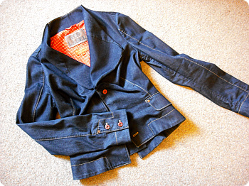
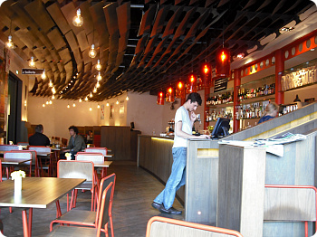
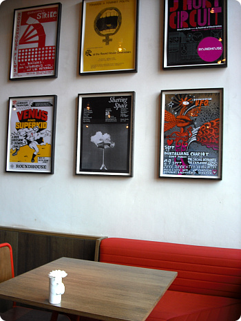
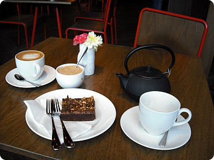

일년에 한번~두번 입으면 많이입는 비뱐 청자켓
더 추워지기전에 한번은 입어야해!! 라는 사명감에
토요일날 입고 외출했따
(이래;; 늠 취향이나 입을려면 나름대로 화장도하고 구두도 신어줘야하는;;
- 그래서 옷장에 무한대기중인 옷과 신발들이 꽤 있다;;
이러니 맨날 옷을사도 (평소에)입을옷이 없지 ;ㅂ;

오랜만에 camden market도는데
사람이 너무많아서 잽싸게 카페로 피신
전에 호러즈 공연봤던 round house내에 있는 카페
바로 옆블럭인데 이 평화로움이라니 ;ㅂ;

캠던하면 생각나는 꼬장꼬장함(;;)과 달리
새건물이라 분위기 밝고 인테리어 이쁘고
아직 레스토랑 오픈전 시간이라 엄청 한산했구
대만족 XD

사람들에게 치여 진이빠졌응께
달달한걸 먹어줘야한다
쪼코 꾸덕꾸덕하고 완전진한게
여기 브라우니 맛났음 +_+
전에 브릭레인갈때 샌달한번 신고나간거처럼
날 더 추워지기전에 자켓입기 완료!!
기념으로 인증샷도 찍었다^^
최근 옷 구입 의욕은 충만하나
당췌 내 원래 취향과 회사에 입고갈만한 옷 사이에서
갈피를 못잡고 방황중 ☞☜
게다가 요즘 벌써 크리스마스 연말분위기때문에
매장둘러보는것도 넘 힘들어
사람 너무많아아아~~!!!!
이제 나이도있구(...;;)
슬슬 casual punk 에서 벗어나서 레베루업을 해야하는데
..............슨생님이 필요해욤 ;ㅂ;